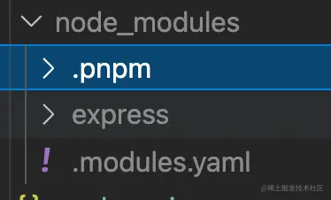
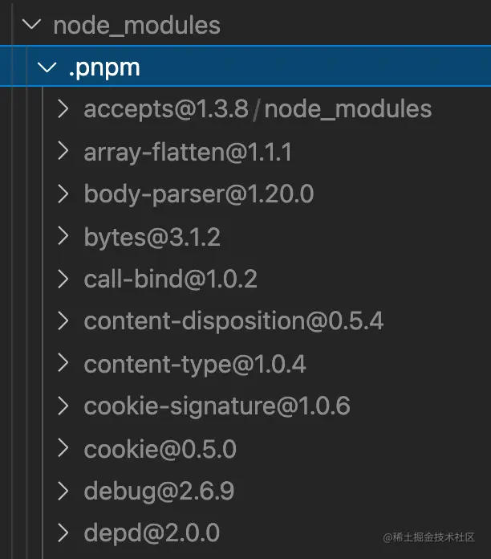
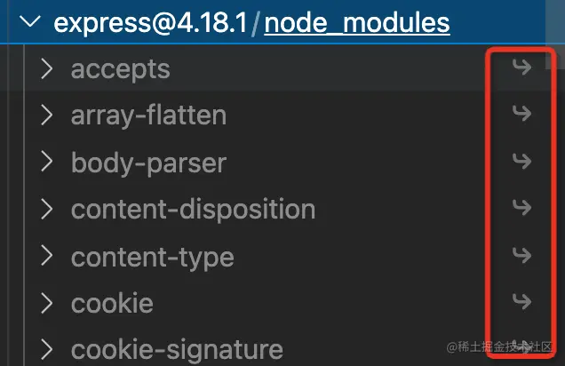
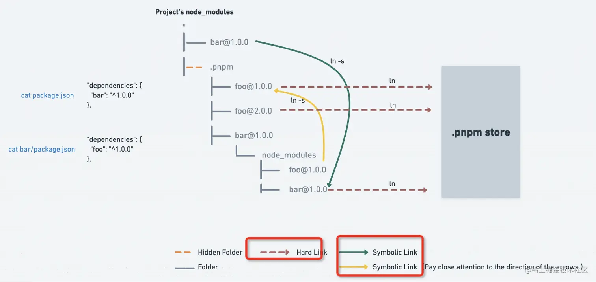

npm
查看配置
npm config list //查看基本配置
npm config list -l //查看所有配置
已经配置的设置
全局安装
npm -g 安装
查看所有全局安装的模块
npm list –depth=0 -global
已经全局安装的模块
淘宝镜像
使用淘宝镜像的命令：
npm install -g cnpm –registry=https://registry.npm.taobao.org
切换镜像
nrm ls
可以使用 cnpm 管理
nrm use npm
dependencies 和 devDependencies
只要是项目中用到的依赖（且安装到 node_modules 中），不管这个依赖是放在 devDependencies 还是放在 dependencies ，都会被打包工具解析、构建，最后都打进 dist 产物中。
生产打包 与 devDependencies 字段无关。
这里提到了 npm 包 ，敏感的同学可能就猜到 devDependencies 和 dependencies 的真正区别了。其实 devDependencies 这个字段的 dev 的真正含义，更多是指 npm 包 的开发阶段所需要的依赖。
npm 与 yarn 与 pnpm
npm 的 node_modules 是嵌套的。
多个包之间难免会有公共的依赖，这样嵌套的话，同样的依赖会复制很多次，会占据比较大的磁盘空间。
这个还不是最大的问题，致命问题是 windows 的文件路径最长是 260 多个字符，这样嵌套是会超过 windows 路径的长度限制的。
yarn 全部铺平在了一层，展开下面的包大部分是没有二层 node_modules 的
当然也有的包还是有 node_modules 的,因为一个包是可能有多个版本的，提升只能提升一个，所以后面再遇到相同包的不同版本，依然还是用嵌套的方式。(不同版本的包，但名字是一样的，只能提升一个，剩下的还是嵌套在里面)
yarn 还实现了 yarn.lock 来锁定依赖版本的功能，不过这个 npm 也实现了。
问题
最主要的一个问题是幽灵依赖，也就是你明明没有声明在 dependencies 里的依赖，但在代码里却可以 require 进来。
这个也很容易理解，因为都铺平了嘛，那依赖的依赖也是可以找到的。
但是这样是有隐患的，因为没有显式依赖，万一有一天别的包不依赖这个包了，那你的代码也就不能跑了，因为你依赖这个包，但是现在不会被安装了。
这就是幽灵依赖的问题。
而且还有一个问题，就是上面提到的依赖包有多个版本的时候，只会提升一个，那其余版本的包不还是复制了很
pnpm
如果你用到了某依赖项的不同版本,只会将不同版本间有差异的文件添加到仓库。例如,如果某个包有 100 个文件,而它的新版本只改变了其中 1 个文件。那么 pnpm update 时只会向存储中心额外添加 1 个新文件,而不会因为仅仅一个文件的改变复制整新版本包的内容。
所有文件都会存储在硬盘上的某一位置,当软件包被被安装时,包里的文件会硬链接到这一位置,而不会占用额外的磁盘空间,这允许你跨项目地共享同一版本的依赖。
包是从全局 store 硬连接到虚拟 store 的，这里的虚拟 store 就是 node_modules/.pnpm。
我们打开 node_modules 看一下：

确实不是扁平化的了，依赖了 express，那 node_modules 下就只有 express，没有幽灵依赖。
展开 .pnpm 看一下：

所有的依赖都在这里铺平了，都是从全局 store 硬连接过来的，然后包和包之间的依赖关系是通过软链接组织的。
比如 .pnpm 下的 expresss，这些都是软链接，

也就是说，所有的依赖都是从全局 store 硬连接到了 node_modules/.pnpm 下，然后之间通过软链接来相互依赖。
官方给了一张原理图，配合着看一下就明白了：

问题
我装一个包，他的依赖全部装到全局了,那如果项目整个删除了，他的依赖还在全局目录中,执行 pnpm store prune 删除不再被引用的包